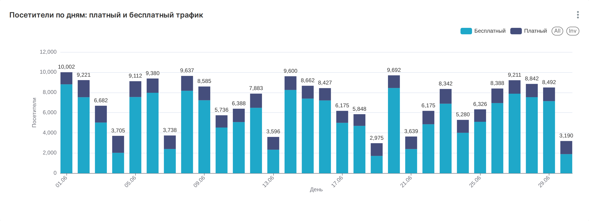
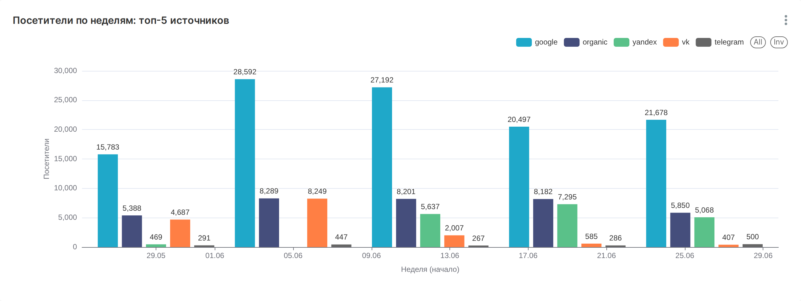
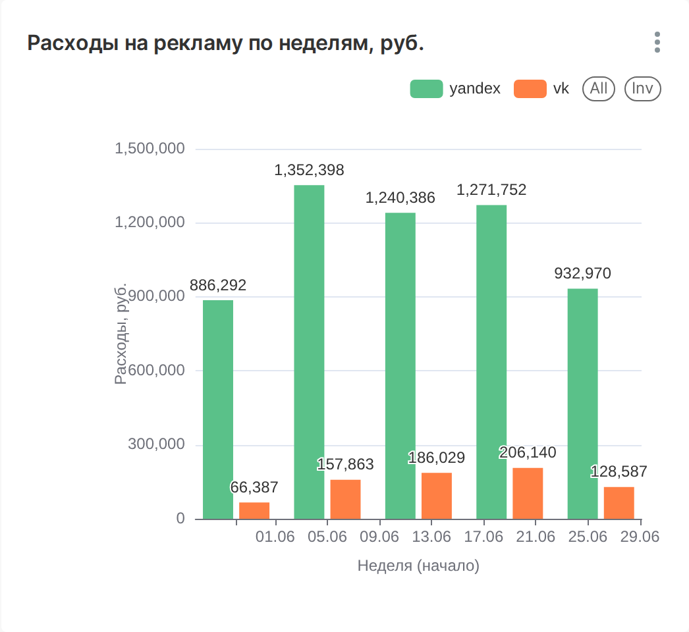
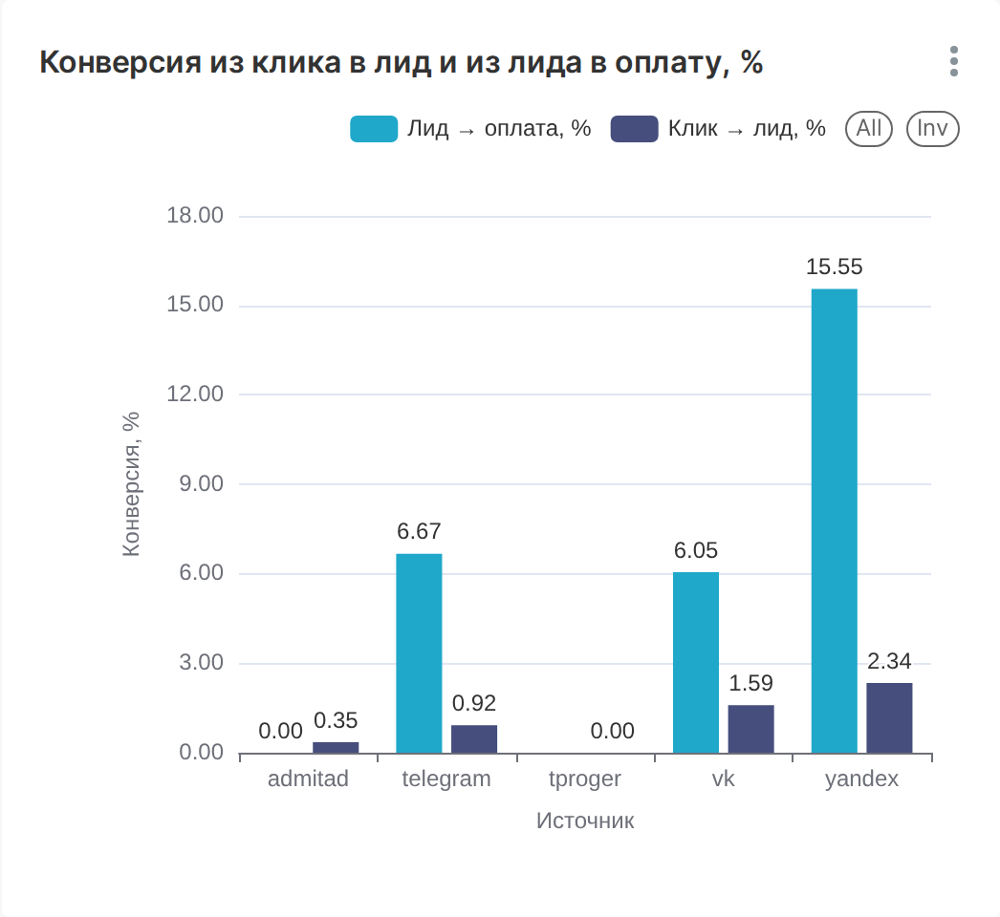
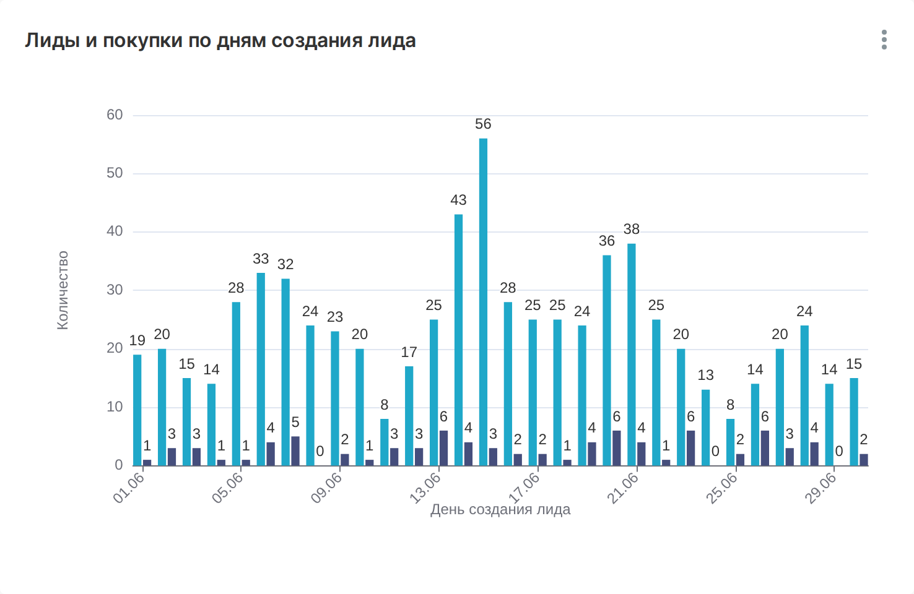
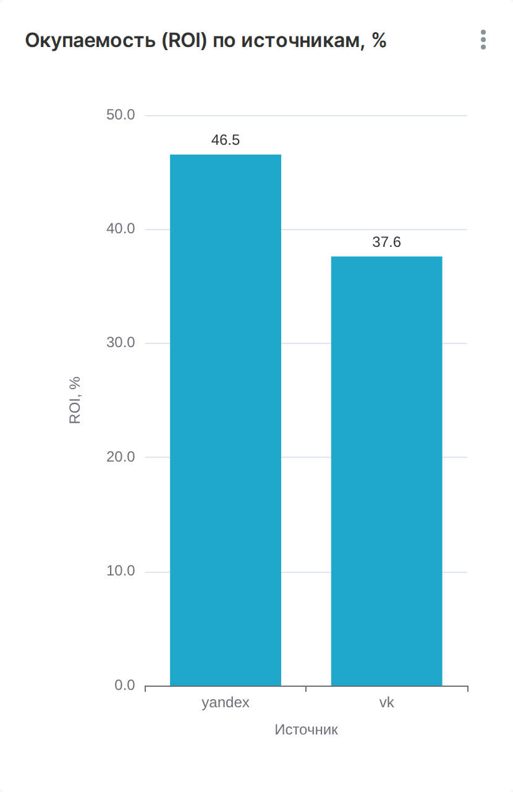
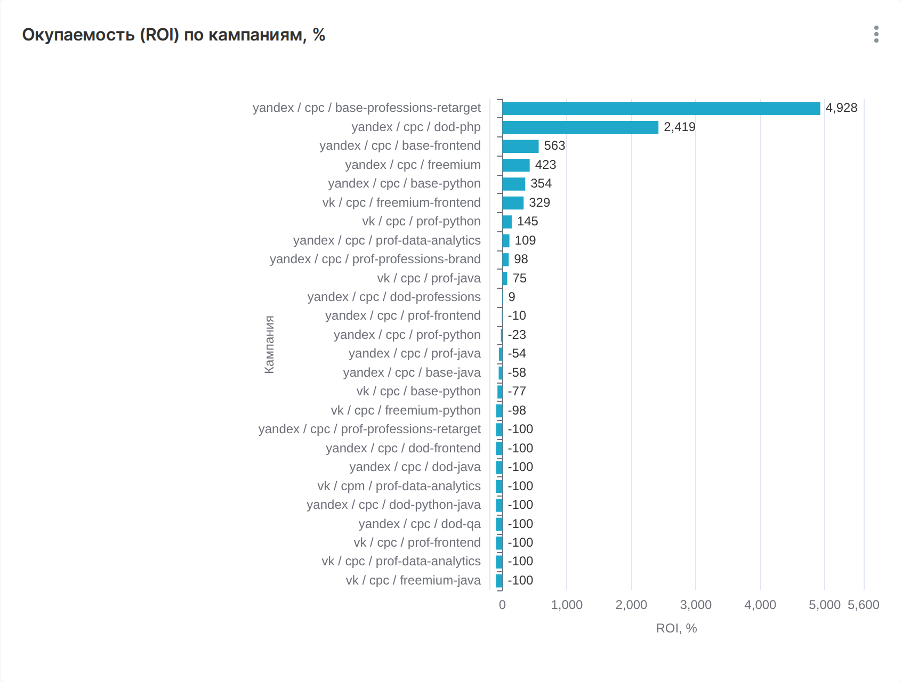
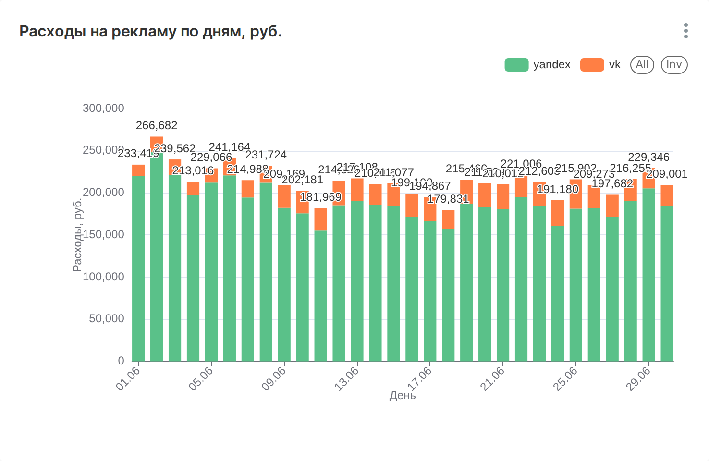
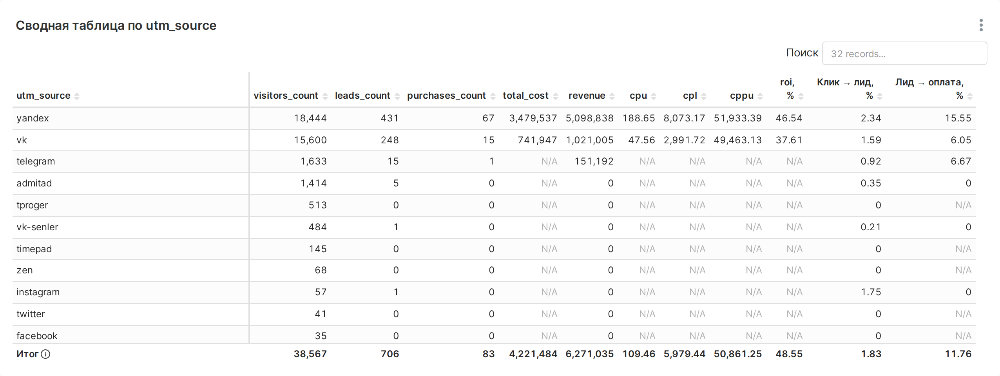

Какие рекламные каналы окупаются и что делать с бюджетом
Период данных: 1–30 июня 2023, модель атрибуции Last Paid Click
Kichigin Sergey · BI-аналитик
Дашборд: http://localhost:8089/superset/dashboard/online-school/ — Superset проекта (запуск: make up, логин admin / admin). Выгрузка дашборда — superset/export/dashboard.zip в репозитории github.com/kicha3007-boop/bi-analyst-project-96.
Метрики: cpu = расходы / визиты, cpl = расходы / лиды, cppu = расходы / покупки, roi = (выручка − расходы) / расходы × 100%.









Дашборд: http://localhost:8089/superset/dashboard/online-school/